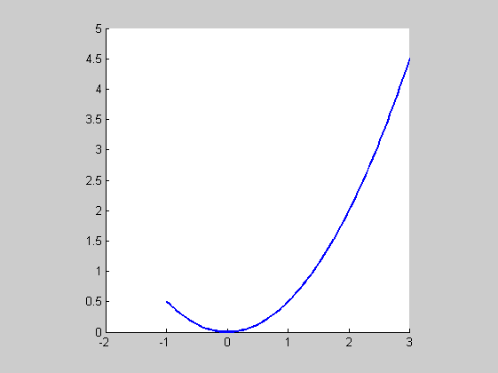
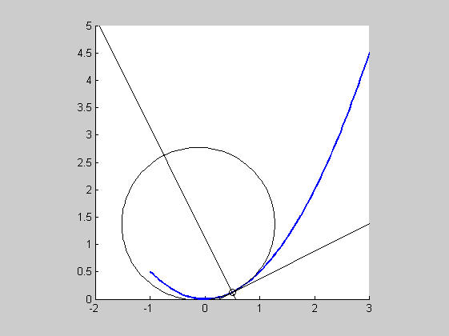

Contents
%DEMOPARABOLACURVATURE One-line description here, please. % output = demoParabolaCurvature(input) % % Example % demoParabolaCurvature % % See also % % % ------ % Author: David Legland % e-mail: david.legland@nantes.inra.fr % Created: 2007-02-26 % Copyright 2007 INRA - BIA PV Nantes - MIAJ Jouy-en-Josas. % Licensed under the terms of the LGPL, see the file "license.txt"
Parabola definition
% parameters of polynomial curve (here, a parabola) c1 = [0 1]; c2 = [0 0 .5]; % parametrization for a parabola arc t = linspace(-1, 3, 100)'; % approximation of the curve curve = polynomialCurvePoint(t, c1, c2); % prepare plot figure(1); clf; hold on; % draw curve drawCurve(curve, 'linewidth', 2); % format axis axis equal; axis([-2 3 0 5]);
Compute curvature for a specific position
% the position pos = .5; % point, derivative and curvature at chosen point point = polynomialCurvePoint(pos, c1, c2); deriv = polynomialCurveDerivative(pos, c1, c2); kappa = polynomialCurveCurvature(pos, c1, c2); % radius is the inverse of the curvature radius = 1./kappa; % tangent and normal lines tangent = [point deriv]; normal = orthogonalLine(tangent, point); % osculating circle center = pointOnLine(normal, radius); circle = [center radius]; % display tangent line, normal, and osculating circle drawPoint(point, 'color', 'k'); drawLine(tangent, 'color', 'k'); drawLine(normal, 'color', 'k'); drawCircle(circle, 'color', 'k');